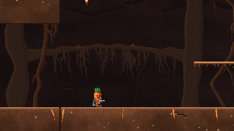
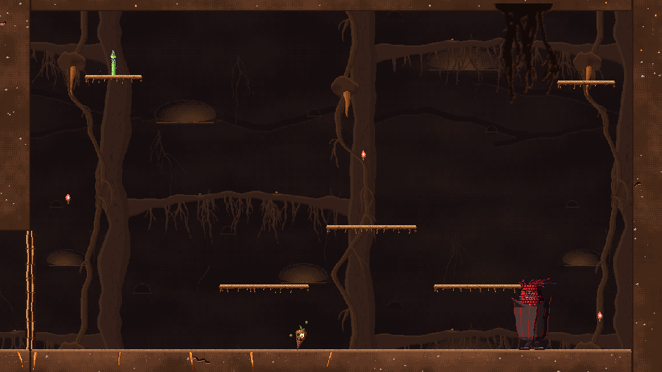

Burrow Encounter
The first dungeon encounter, in the Warm Burrow. Clear three sealed boss rooms, carry each boss's orb back to the hub, then bring down The Ginger to open the way deeper.
Overview
The squad starts in a hub of glowing toadstools, where three empty pedestals glow faintly in red, green and blue, and The Ginger hovers overhead in a shield bubble. A junction shaft east of the hub leads to three boss rooms stacked one above the other, each lit by torches in its key's colour. Beat a room's boss and it drops an orb in that colour. Carry the orb back to its pedestal and part of The Ginger's shield falls. Once The Ginger is down, the floor gate in the hub opens onto the next part of the dungeon.
The layout
- The hub (west). The players drop in here. It holds the three pedestals, a few mushroom platforms, and the closed floor gate.
- The junction shaft. A bridge runs straight from the hub to the middle room, and you can drop through it. Zigzag branch ledges climb to the top room and drop to the bottom one.
- The boss rooms (east), each behind a root door:
| Room | Key | Boss | Spawn groups |
|---|---|---|---|
| Top | green | Sweet Potato | "floor" at either end of its open charge lane, and "ledges" on the three ledges above |
| Middle | red | Red Corn | "perches" by the ceiling for its snipers, and "floor", where enemies burst up out of the ground |
| Bottom | blue | Ghost Pepper | "high" on the two top ledges, and "floor" |
Each boss room is one fixed camera shot (a CameraZone). Everywhere else the camera follows you.
A boss room

- The doors shut. Once a player is a little way inside a room (its trigger area, kept clear of the doorway), the door slams behind them with a thud and a screen shake (strength 0.45 out of 1).
- Everyone joins the fight. Any player who isn't already in a fight is pulled into the room when its door shuts, so the squad never splits across a locked door.
- The boss, then its beats. The boss arrives after a short delay, and the room's fight beats bring in its adds as it loses health (see below). Each squad is announced first by a horn and rings at the spots it will come from. Some burst up out of the ground with a spray of dirt.
- The boss falls. Its adds drop with it, the door slides open, and the boss leaves an orb on the floor where it died.
Different rooms can be fought at the same time by different players.

How each room's fight is paced
Each boss room's fight follows the same five-beat curve (see Fight Pacing): an opening, a breather, a spike, a valley with an ammo drop, and a climax as the boss dies. The beats start as the boss loses health, and each room's squads were picked to suit its boss. The spike and the climax each come in two waves a few seconds apart, so they build and hold rather than flashing up and being cleared at once. The valley waits until the spike is cleared, so it really is a rest.
| Room | Opening | Breather | Spike (two waves) | Valley | Climax (two waves) |
|---|---|---|---|---|---|
| Sweet Potato | a zombie and a mushroom on the floor | a lone Rot Runner | mushrooms on the floor and an asparagus on a ledge, then another of each | empty, and an ammo brick | asparagus on the ledges, mushrooms and a zombie, then a mushroom and zombies |
| Red Corn | zombies and Rot Runners trickling up from the floor | a lone Rot Runner | a potato bull and a zombie, then pumpkins | empty, and an ammo brick | a potato bull, pumpkins and a zombie, then the two asparagus snipers on the perches |
| Ghost Pepper | a pair of zombies | a lone Rot Runner | zombies on the floor, then pumpkins dropping from the high ledges | empty, and an ammo brick | a potato bull and zombies, then zombies and Rot Runners |
The choices follow each boss: - Sweet Potato: its floor is a charge lane, so its adds are mostly ranged and up on the ledges. There are no pumpkins or potato bulls, which would mean dodging two chargers at once. - Red Corn: it already fills the air with kernels, so its adds are melee and fast, pushing players off their safe spots. Its two perch snipers arrive with the climax. - Ghost Pepper: it attacks from the air, so its adds crowd the floor, splitting the squad's attention up and down.
The spike starts at 0.4 of the boss's health taken and the climax at 0.8 (shown for the Red Corn's room).
Enrage
All three bosses also enrage halfway through their health, which lands in the middle of the spike and keeps the boss enraged through the valley. Whether to move the enrage to the climax is the owner's call.
Orbs and buffs
- Walk within 18 pixels of an orb to pick it up. It floats over your head, and its buff's name shows above your ammo counter.
- You can carry only one orb at a time. A player already carrying one walks straight past another.
- If you go down, or leave the game, you drop the orb where you were.
- Stand on the pedestal of the matching colour to place it. The pedestal's runes blaze, the orb hovers above it, and a chord rings out.
| Orb | Buff |
|---|---|
| Red, from Red Corn | KERNEL FURY |
| Green, from Sweet Potato | SPUD RUSH |
| Blue, from Ghost Pepper | GHOST HEAT |
Work in progress
The buff names are stand-ins, and carrying an orb doesn't change anything yet beyond the orb over your head and the name on the HUD.
The Ginger and the gate
The Ginger lives in the hub and is immune at first. Each orb placed on a pedestal unlocks part of its health, so the squad has to clear the boss rooms before it can be beaten. While the rooms are being fought, a Ginger Shade haunts one of them. When The Ginger dies, the floor gate slides open with a big screen shake (strength 0.8 out of 1), and the squad drops through into the chamber below.
The whole loop
- The squad drops into the hub. The Ginger appears, shielded.
- Clear the three boss rooms, in any order, together or split up.
- Bring each orb back to its pedestal, one per player at a time.
- Beat The Ginger segment by segment as its shield falls away, then win its last stand before its charge wipes the squad.
- Drop through the opened gate.
Co-op
The host decides everything: who is in a room, when doors shut, who picks up an orb, when one is placed, and when the gate opens. It tells every machine, so doors, orbs, pedestals and the gate look the same for everyone.
- Joining late: a new player is sent the whole state (which doors are shut, where every orb is, which pedestals are lit, whether the gate is open, which enemies are the bosses), so they see the encounter as it stands.
- Squad wipe: when everyone is down, the level restarts for everyone and the whole encounter starts over, bosses included.
Known gaps
- What each buff does is still to be designed.
- There are no checkpoints: a wipe restarts the whole encounter, even bosses already beaten.
- A player who joins mid-fight sees the shut doors but isn't pulled into the fight.
- The room snipers are regular asparagus for now, not a dedicated sniper enemy.
- Enemies bursting from the ground have the dirt spray but no climbing-out animation yet.
- The chamber beyond the gate is empty: the next encounter goes there.
- The doors, gate and torches are simple code-drawn pieces, and the hub could use more set dressing.
Building it
The encounter is laid out in the scene, so it can be reshaped in the 2D editor:
- An
Encounternode runs it. It names the gate, the hub area and the main boss. - Each boss room is a
BossRoomnode with its size, trigger area, entry point (where pulled-in players appear), key and doors. - Inside each room,
RoomSpawnmarkers set what comes in, where, when, with how much health, and whether it bursts out of the ground. One per room is itsBOSS. - The doors, gate, pedestals and torches are Level Parts.
Tunable parameters
These are read straight from the game's files, so they are always the current values. Open the file in the Godot Inspector to change them.
Encounter
Edit scripts/encounter/encounter.gd (script defaults; a scene or resource may override them)
| Parameter | Value | Range | What it does |
|---|---|---|---|
gate | | The floor gate that opens when every pedestal is lit (or, with a main_boss, when it dies). | |
hub | 0 x 0 at (0, 0) | The hub, where the pedestals are and the main boss lives (world pixels). Players start in it. | |
main_boss | (empty) | The encounter's main boss (a key of Level.KINDS), or "" for none. It's spawned once, the first time a player is in the hub, and the gate then waits for it to die instead of for the third pedestal. | |
main_boss_at | Vector2.ZERO | Where the main boss appears (world pixels). | |
palette | preload("res://styles/burrow_keys.tres") | The key colours, shared with the torches and pedestals. | |
pickup_radius | 18 | 4 to 80 | How close (pixels) a player has to get to a buff on the ground to pick it up. |
hud_lift | 24 | 0 to 120 | Where the carried buff shows on the HUD: this many game pixels above the bottom-left weapon HUD. |
carry_height | 58 | 0 to 120 | How high over its carrier's feet a carried buff floats (pixels). |
bob | 2 | 0 to 10 | How far a buff on the ground bobs up and down (pixels). |
slam_shake | 0.45 | 0 to 1 | Screen shake when a room's doors slam shut (0..1). |
gate_shake | 0.8 | 0 to 1 | Screen shake when the gate opens (0..1). |
| Beats | |||
beat_shake | 0.2 | 0 to 1 | Screen shake as a beat's squad is announced (0..1). |
beat_cue_color | #ff7a3a | The telegraph's colour at the spawn group: a pulsing ring per spawn point. | |
beat_cue_glow | 2 | 0 to 4 | How bright the telegraph rings glow (linear; above 1 blooms). |
spawn_spread | 14 | 0 to 40 | How far apart (pixels) enemies arriving at the same spawn point are spread. |
| Stand-in boss label | |||
wip_label_color | #ff8a6a | The label over a stand-in boss ("WIP" until the real boss exists; see WIP.md). | |
wip_label_height | 18 | 0 to 60 | How far above the boss's head the label sits (pixels). |
Key colours and buff names
Edit styles/burrow_keys.tres · fields defined in scripts/encounter/key_palette.gd
| Parameter | Value | Range | What it does |
|---|---|---|---|
red | #ff4a3a | The red key's colour (torches, buff, pedestal). | |
green | #6af04a | The green key's colour. | |
blue | #4aa8ff | The blue key's colour. | |
glow | 2.4 | 0.5 to 6 | How brightly flames, buffs and lit pedestals glow (linear; above 1 blooms). |
dim_glow | 1.1 script default 0.6 | 0 to 2 | How brightly an unlit pedestal's runes glow, as a hint of where things go. |
| Buff names | |||
red_buff | KERNEL FURY | What carrying the red orb is called (shown above the ammo; a stand-in, see WIP.md). | |
green_buff | SPUD RUSH | What carrying the green orb is called. | |
blue_buff | GHOST HEAT | What carrying the blue orb is called. | |
Boss room
Edit scripts/encounter/boss_room.gd (script defaults; a scene or resource may override them)
| Parameter | Value | Range | What it does |
|---|---|---|---|
size | (1120, 630) | The room's box (pixels from the node), used to tell who's inside it. | |
trigger | 920 x 630 at (200, 0) | Crossing into this box (room-local) shuts the doors. Keep it clear of the doorway. | |
entry | (120, 600) | Where stragglers are pulled in to when the doors shut (room-local, feet). | |
key | KeyPalette.Key.RED | Which key's buff the boss drops (match the room's torches and a hub Pedestal). | |
doors | [] | The doors that shut while the fight's on. | |
| Pacing | |||
intensity | 1 | 0.1 to 4 | Scales every beat's squad sizes in this fight (1 = as the squads are written). |
players_scale | (1, 1.5, 2) | Squad sizes times this for 1, 2 and 3 players (x, y, z). More players face more enemies, not tougher ones: extra bodies split the squad's fire, where extra health only makes a fight longer. | |
threat_table | preload("res://styles/threat_costs.tres") | The threat costs the readout and the beats use. | |
readout_players | 1 | 1 to 3 | Which player count the readout above the room shows (1 to 3). |
Room spawns
Edit scripts/encounter/room_spawn.gd (script defaults; a scene or resource may override them)
| Parameter | Value | Range | What it does |
|---|---|---|---|
role | Role.ADD | An add, or the room's boss. | |
group | (empty) | ADD: the spawn group it belongs to; a Beat names the group its squad comes in at. | |
kind | zombie | Which enemy comes in (a key of Level.KINDS): the boss, or in a room without Beats, this point's add. | |
hp_scale | 1 | 0.1 to 50 | Its health, times the kind's usual (bosses are tougher). |
delay | 1 | 0 to 60 | Seconds after the doors shut before it first arrives (the boss, or a no-Beats room's add). |
respawn | 8 | 0 to 60 | ADD in a room without Beats: seconds after it dies before another comes in (0 = just the once). |
emerge | No | Enemies arriving here burst up out of the ground (a spray of dirt and a rumble). | |
boss_name | (empty) | BOSS only: a stand-in boss shows "WIP: <this>" over it; leave it empty for a real boss. |